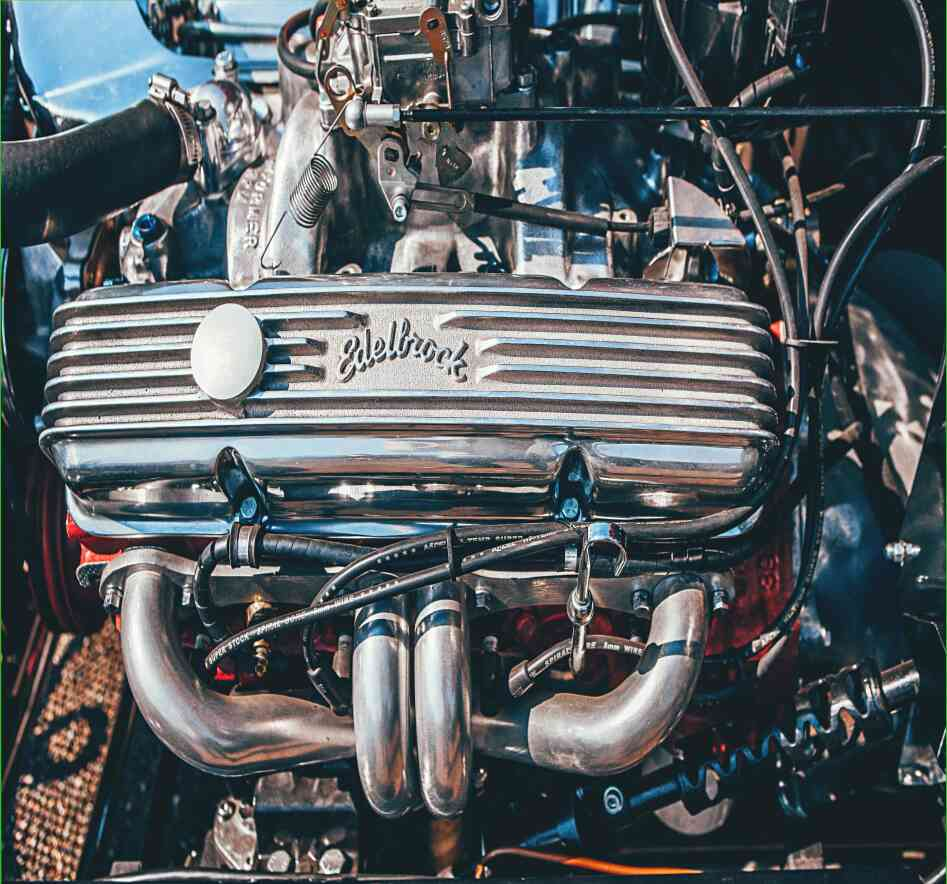

10.04.2021
Дальнобойщик рассказал мне, как сделать свою зимнюю машину. ТЕМА: "Фейерверк" При переключении передач на парковку многие автомобилисты могут задуматься о погоде на предстоящий сезон и о том, как подготовиться к различным климатическим возмущениям. Основываясь на своем опыте, я хочу поделиться с вами методом, которым пользуются друзья дальнобойщики, когда не хотят садиться в машину и ехать несколько часов на морозе или несколько дней в палящую жару. В свое время я работал в ряде операций, и могу с гордостью сказать, что эта техника не использует никаких специальных инструменты или что-нибудь новое. Вся информация уже была доступна в руководстве, хотя я все еще изменил несколько вещей, в основном добавив немного цвета . Как сделать белоснежный зимний автомобиль за три месяца Нужно взять следующие элементы: Лист чистой белой газеты, Дрель с насадкой, трубку с резьбовой втулкой, трубку с резиновым уплотнителем, плоскогубцы . Затем, вам нужно очистить внутреннюю часть трубки ножом. Лучше использовать зазубренный нож, но также лучше использовать тупой нож (даже коммерческий нож), который имеет плоскую, хорошо отточенную режущую кромку. Затем нам нужно приклеить крышку с помощью супер клея (геля), так как он, как известно, работает. Мы также используем тот же универсальный растворитель (воск) для очистки поверхности. После этого устанавливаем трубку с резиновым уплотнителем (топором). После этого устанавливаем трубку с резиновой манжетой (Каньон). Очищаем поверхность, хорошо смазанную растворителем (или вода с антифризом). Затем мы устанавливаем "Звезду" на "Звезду" - это концентрат, который можно приобрести в любой известной аптеке. Стоит отметить, что такой инструмент не предназначен для того, чтобы быть